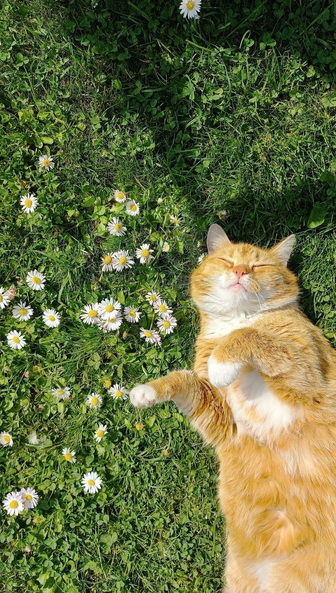
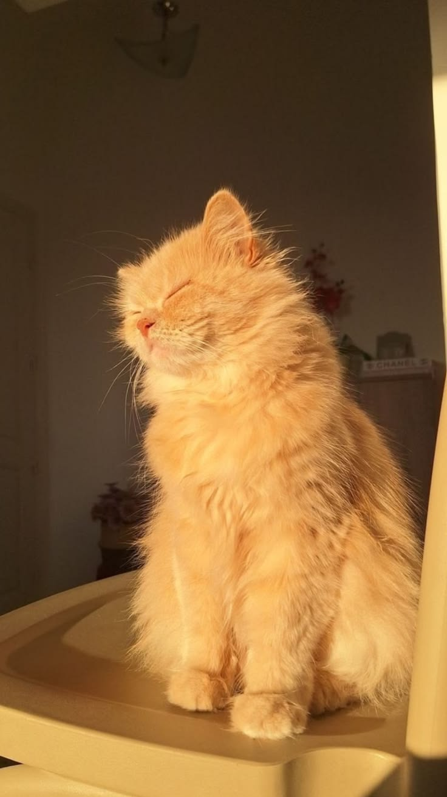
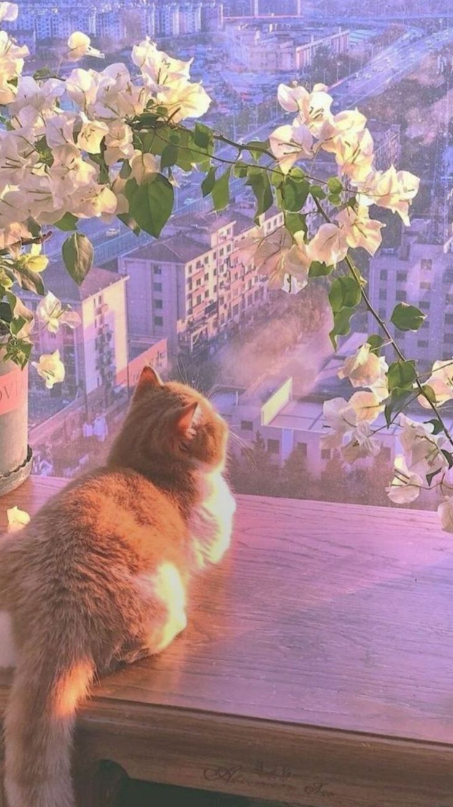

This portfolio has been prepared to systematically document and compile the various activities, tasks, and learning outputs completed throughout our laboratory sessions. It serves as a record of my academic progress, practical experiences, and the knowledge and skills I have developed through the different laboratory activities. Through this portfolio, I aim to present my work in an organized manner and reflect on the learning experiences gained throughout the course.



My name is Janvanx Harry A. Porol. I have many dreams and aspirations in life, but I am not always certain whether I will be able to achieve them. As time passes, I have come to realize that life brings more challenges and difficulties along the way.
These experiences have taught me that achieving my dreams requires patience, determination, hard work, and the courage to continue moving forward despite the obstacles I may encounter.